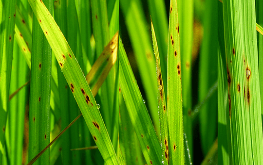

PLANT LEAF DISEASE PREDICTION AND PESTICIDE RECOMMENDATION

Disease Type
Brown Spot
Symptoms
- Symptoms start as dark brown, irregular spots on both upper and lower leaf surfaces.
- Lesions typically will have a yellow or chlorotic halo when held up to a back light. Adjacent lesions frequently merge to form irregularly shaped blotches.
- Leaves become yellow to rusty brown. Symptoms of Brown Spot can also develop on stems and pods of plants approaching maturity.
- Stem and pod lesions have indefinite margins, are dark in appearance and range in size from flecks to larger areas.
Management
- The onset of Brown Spot symptoms is influenced by the relative maturity of the soybean variety, and symptoms appear earlier in the season on an early-maturing variety.
- Varieties vary in their susceptibility to this disease, but resistance has not been identified.
- Brown Spot is more severe in continuously cropped soybean fields.
- Reduced tillage systems will tend to have more brown spot as the pathogen overwinters in residue.
- Application of fungicides to manage brown spot in Nebraska is typically not warranted with most varieties.
Home
Predict